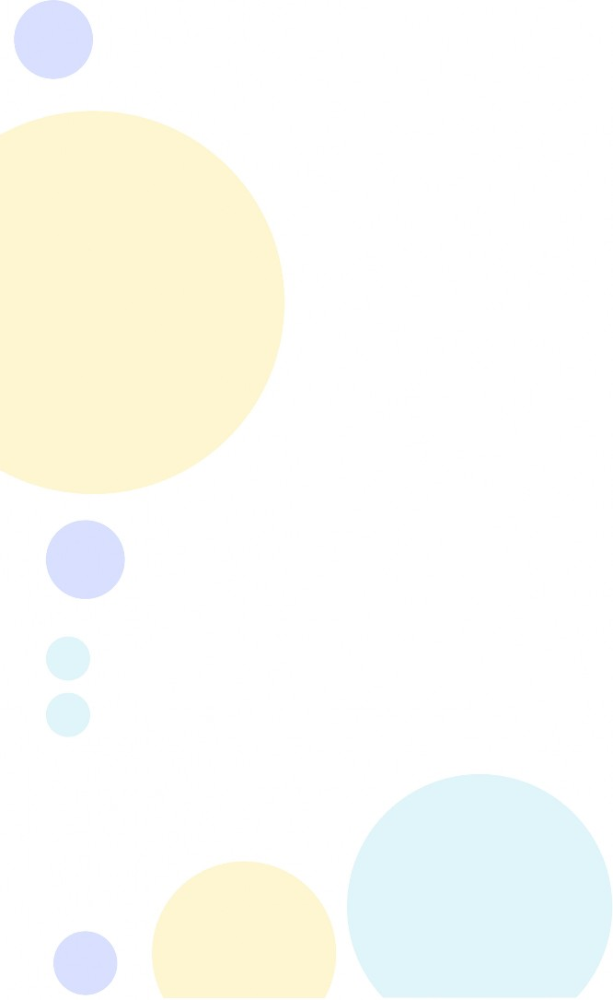

DIRECTRICES PARA AUTORES
Primera estructura
Los trabajos tendrán la siguiente estructura y se escribirán con letra Times Roman 12 a 1,5 de espacio,
1, Título
2, Autores
3, Resumen (Abstract)
4, Palabras clave (Keywords) 5, Introducción
6, Materiales y métodos (metodología) 7, Resultados y discusión
8, Conclusiones
9, Referencias
Título
Entre 15 y 20 palabras en mayúscula y negrita, No incluye siglas, abreviaturas ni palabras sin contenido, Debe ser tan convincente que capte la atención del lector,
Autores
Se permiten hasta cinco (5) autores, Contiene nombres y apellidos completos, (sin títulos académicos ni categoría) seguido de un número en superíndice para identificar la afiliación de los autores, correo electrónico, La afiliación debe contener únicamente el nombre de la institución y el país,
Resumen (Abstract)
Tendrá entre 200 y 250 palabras en español e inglés, Revela el objetivo del artículo, Describe brevemente el tema, la metodología y los resultados, sin entrar en detalles, Se escribe en un solo párrafo, No contiene abreviaturas, siglas, citas ni referencias a figuras, tablas, cuadros, gráficas, Debe redactarse en tercera persona y en voz activa, Expresa una secuencia lógica y precisa de la exposición, Es una argumentación convincente, No incluye interpretaciones subjetivas y equívocas ni valoraciones crítica e interpretativas,
Palabras clave (Keywords)
Son una orientación importante para el lector, Pueden ser entre 4 y 5 escritas en español e inglés y separadas por comas (,), Se relacionan estrechamente con el título y el contenido del artículo,
Introducción
Recrea el problema de investigación detalladamente, Explica las causas de la investigación, las razones que la justifican, Exigen una lógica deductiva- inductiva, transita de lo

general a lo particular, Se sustenta en el análisis de fuentes, en lo que han dicho otros autores acerca del tema, Plantea lo que se conoce, se desconoce y lo que se pretende revelar de manera novedosa, Su redacción debe ser muy cuidadosa y exquisita para movilizar la atención del lector,
La finalidad de la introducción es propiciar antecedentes para que el lector comprenda y evalúe el alcance de la investigación, Trata aspectos relacionados con las fuentes consultadas e incluye antecedentes, postulados teóricos, escenario geográfico, aspectos históricos y jurídicos si fueran necesarios,
Materiales y métodos
Revela la forma de proceder de los investigadores para lograr el objetivo, Se refiere al tipo de investigación, a los métodos empleados, la selección de la muestra y su caracterización, las técnicas que aplicaron y a sus instrumentos, las bases de datos utilizadas, la lógica del proceso investigativo, la forma en que se realizó el procedimiento y análisis de la información todo lo cual debe estar explicado partiendo de las razones para su puesta en práctica, la manera en que se hizo y la utilidad de los mismos,
Resultados y discusión
Es el apartado del artículo que moviliza la atención de los lectores con
mayor interés y sentido crítico, Se deriva del procesamiento de la información recopilada, Se debe redactar con elevado sentido de la responsabilidad, Su contenido se basa en los hallazgos de la investigación, Es la parte de mayor relevancia teórica y cognoscitiva, Constituye la novedad de la investigación,
Se sustenta en los resultados, pero no los repite, Es la dialéctica contradictoria, no antagónica entre lo conocido, lo desconocido y el nuevo conocimiento, Pone al descubierto las limitaciones de la teoría vigente relacionada con el objeto de investigación, Puntualiza los hallazgos de la investigación, Expresa la menara en que la investigación cubre el vacío teórico que existía acerca del objeto de investigación, Coloca a disposición de la comunidad académica y científica la novedad de la investigación,
Conclusiones
Prueban si el objetivo se logró o no, Se refieren a los aspectos esenciales de la investigación, Resaltan los hallazgos y sus consecuencias prácticas y teóricas, Se redactan clara, precisa y brevemente, Deben dejar una sensación de satisfacción en el lector, Son puntualizaciones convincentes, No se admiten recomendaciones, No se enumeran ni colocan en viñetas,

Referencias
Las citas y referencia bibliografía deben responder a la norma APA, El máximo de referencias bibliográficas aceptada es de 25 (se aceptan hasta 30 según el estudio), Todas las referencias bibliográficas deben estar citadas en el texto garantizando que a cada cita le corresponda una referencia y cada referencia al menos sea citada una vez, Al menos un 25% de las referencias pertenezcan a artículos indizados en bases de datos de Scopus o la Web of Science, Deben utilizarse citar y referenciar fuentes en más de un 50% de fuentes actualizadas de los últimos 5 años, No se admite bibliografía gris o de poco valor bibliográfico,
Imágenes
Las tablas, esquemas y gráficos se aceptarán en formato de imagen, Los mapas, fotografías, dibujos e ilustraciones en formato GIF, JPG, BMP o PCX; deberán presentarse en correspondencia con lo establecido en la séptima edición de la norma,
Las tablas y figuras deben ajustarse a lo establecido en séptima edición de las normas APA,
,

tegtn@a estructura
También se publicarán artículos con la siguiente estructura
1, Título
2, Autores
3, Resumen (Abstract)
4, Palabras clave (Keywords) 5, Introducción
6, Desarrollo
8, Conclusiones
9, Referencias
Cuando se aplique esta estructura la metodología empleada será la última parte de la introducción, En el desarrollo deberá aparecer lo correspondiente a resultados y discusión de la estructura anterior, El resto de los apartados mantiene el mismo contenido descrito previamente,